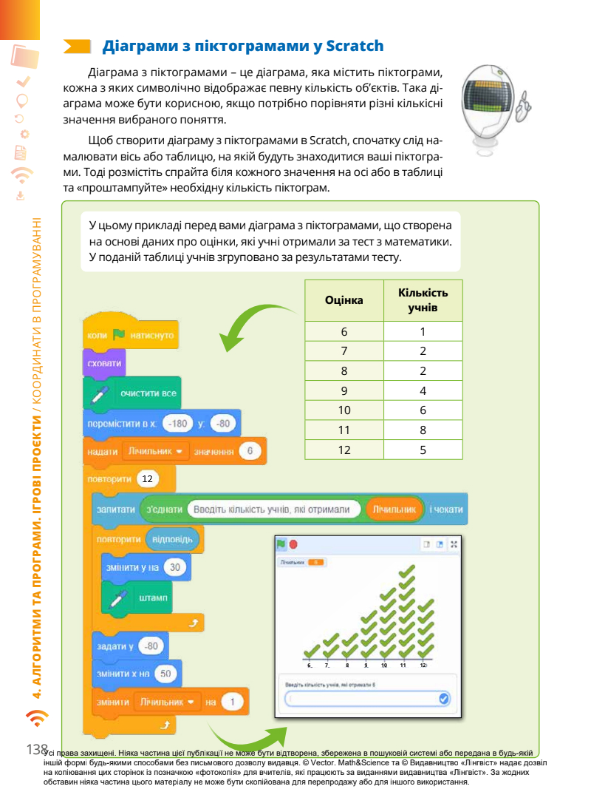

Поля: верхнє — 20 мм, нижнє — 20 мм, ліве — 30 мм, праве — 15 мм.
Шрифт —
Times New Roman.
Заголовки 20 жирний
Підзаголовки 16
Розмір шрифту — 14 pt
Міжрядковий
інтервал — 1,5
Абзац 1,25
Відступ після абз
Вирівнювання тексту — по ширині.
Нумерація
сторінок — з другої сторінки, по правій стороні.
Список: нумерований та маркований
Колонтитул верхній
ПІБ клас
Зображення з підписом 12пт курсив, блок-схема
Game
Діаграма
Змінити спрайт на paddle

Aлгоритм Scratch гра "Вгадай число" від 0 до 100.
Опис алгоритму:
Створюєте змінну Num.
Надаєте змінній Num випадкове число від 0 до 100.
Цикл повторити до (Num = Відповідь)